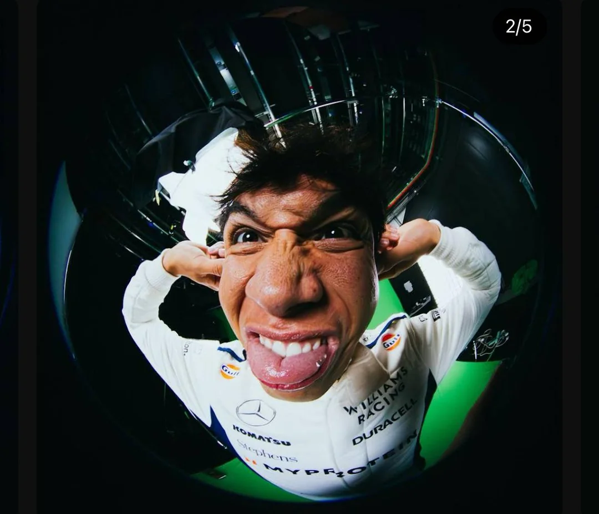
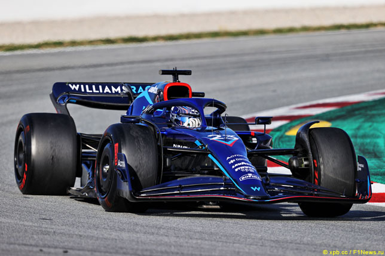

Biographie
Geboren in London, aber unter der Flagge Thailands, war Alexander Albons erstes Wort tatsächlich Italienisch.
Dieses Wort war Ferrari - obwohl er bei einem anderen italienischen Team seinen großen Durchbruch in der Formel 1 hatte.
Der Junior Albon, der Michael Schumacher vergöttert und davon träumt, eines Tages in der Formel 1 zu fahren, wurde 2016 von einem gewissen Charles Leclerc zum GP3-Titel verdrängt.
Dann gab er seine große Freundschaft mit George Russell an der Strecke auf, als er den Titelkampf in der Formel 2 2018 bis zum Schluss gewann.
Albon, der 2019 zusammen mit einem weiteren Zeitgenossen – Lando Norris – in die große F1-Liga aufgestiegen war, sprach in den ersten Rennen mit Toro Rosso auf der Strecke und wurde in der Mitte der Saison zu Red Bull Racing befördert.
Albon, ein stilvoller Überholer mit Meisterschaftsmentalität, zeigte sich unbeeindruckt von der Zusammenarbeit mit Max Verstappen in der zweiten Hälfte seiner Rookie-Saison und holte in acht seiner neun Rennen 2019 mit Red Bull Top-Sechs-Platzierungen.
2020 erwies es sich als schwieriger, mit dem zukünftigen Champion in Kontakt zu bleiben, und Red Bull strich ihn aus dem Rennaufgebot.
Entscheidend war jedoch, dass Albon als Test- und Ersatzfahrer beibehalten wurde, wodurch er sehr auf dem Radar der Teamchefs blieb, was zu seiner Rückkehr in die Startaufstellung 2022 mit Williams führte, wo er sich einen Ruf als schneller Qualifikant und reifer Rennfahrer erarbeitet hat.
Entspannt und fröhlich mit einem frechen Grinsen ist der thailändische Fahrer bei seinen Kollegen beliebt – im Hexenkessel des Motorsports nicht immer einfach – aber in der Formel 1 gelingt man nicht, indem man beliebt ist. Albons Herausforderung bleibt groß:
Er will das Beste aus seiner seltenen zweiten Chance in der Formel 1 machen.

